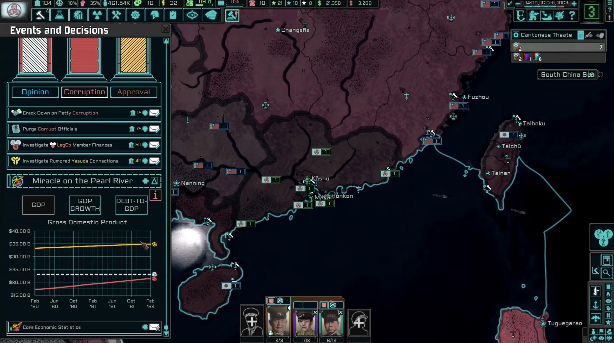

Game Total-Conversion Project
Over the past couple of years, I pursued my interest outside my degree courses by working in a team leadership position on a large collaborative total-conversion game modification project of over 200 members and over a quarter of a million players.
Key features:
 The Project:This project totally converts the WW2 grand strategy of Hearts of Iron 4 into a both strategic and narrative cold war simulation game.
The mod faced a successful release and in a Paradox Interactive Dev-Diary less than a year after release, was marked as the third largest total conversion mod for the game.
The project overhauls numerous game features, including the creation of a new global economic system more suitable to a cold war simulation.
Other features include but are not limited to a total visual overhaul, custom original soundtrack and experimental usage of game features.
These all combine to change the atmosphere, gameplay and objectives of the game to create a new, unique experience which has continued to expand and improve.
My work in the team has involved both the design and implementation of content, as a member of sub-teams and in leadership of such teams.
Through this I developed my problem-solving and communication skills by coordinating with members of different roles to collaborate and produce a high-quality finished product.
My work and interaction within the team varied much over time. This included the expansion of standard game-features for new content, to developing new gameplay mechanics and finding creative ways to repurpose vanilla features to solve problems.
It also gave me much practice in both the visual and practical design of GUIs. Through close communication with our QA team, I was able to review and improve upon our designs.
Developing in varied positions helped to understand the workflow of other team members to better cooperate with them.
Alongside some degree of involvement in most upcoming content updates, I was responsible for management of the teams completion and release of the long-developed 1.3 update, involving much GUI development, new mechanics and improvement of existing content
I was also in charge of a major overhaul to the tech system within this update, along with overhauls in previous updates integrating new game features and adapting them to better suit the custom tech system.
In these overhauls I managed the expansion of our tech team to meet rising demand for mod-stylised GFX, as the number of custom GUIs expanded in these and future updates.
I was also thoroughly involved in the production of the 1.4 update, "Silicon Dreams", in which I was able to further experiment with testing new mechanics to change the way in which the game is played.
These mechanics, including the implementation of special objectives within combat to change the ordinarily repetitious base-game gameplay loop, were well received and may help to guide design of future content.
This update also saw the first significant use of custom shader code within interfaces for depicting regions. This has shown incredible use for replacing previous labour-intensive methods involving production of numerous image frames.
My time in this project has helped enable me to practice project management and time management, organization of research, planning and general documentation for code and graphical assets.
I also learnt the importance of proper documentation, especially in a volunteer project where there is inevitably a high turnover rate of members who will need to familiarize themselves with existing planning and code.